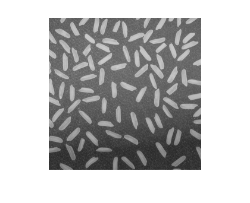
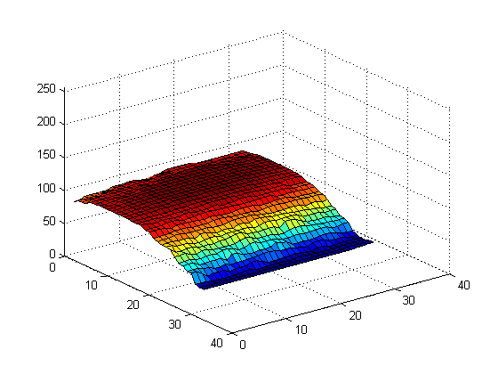
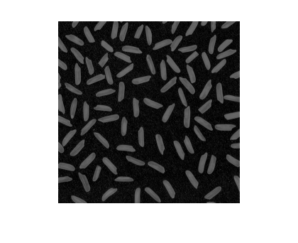
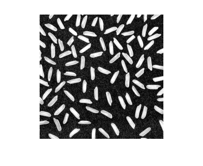
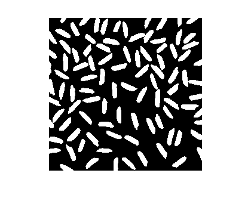
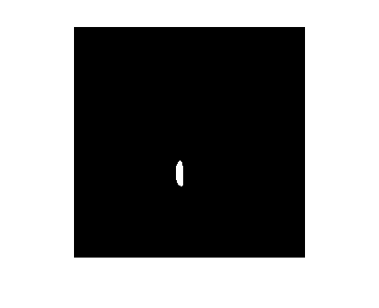
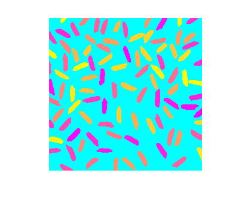

不均一な照明の補正
米粒のイメージを使って、この例は、不均一な照明を補正するためのイメージを どのように強調するか、個々の粒を均一にするために強調したイメージをどのように使用するかを説明します。その後、粒の特性について知ることができ、イメージ内のすべての粒に対する統計を簡単に計算します。
目次
手順 1: イメージの読み込み
I = imread('rice.png');
imshow(I)
 手順 2: 形態学的オープン処理を使用した背景の推定
背景は、イメージの下部の部分より、中央部が明るくなっていることに注意してください。関数 imopen を使用して背景の明るさを推定します。
background = imopen(I,strel('disk',15)); % Display the Background Approximation as a Surface figure, surf(double(background(1:8:end,1:8:end))),zlim([0 255]); set(gca,'ydir','reverse');
手順 3: オリジナル イメージからの背景イメージの抽出
I2 = I - background; imshow(I2)
手順 2 および手順 3 は、最初に形態学的なオープン処理を計算し、次にオリジナル イメージから抽出する関数 imtophat を使用したシングル ステップに置換できることに注意してください。
I2 = imtophat(I,strel('disk',15));
手順 4: イメージ コントラストの増加
I3 = imadjust(I2); imshow(I3);
手順 5: イメージのしきい値処理
調整されたイメージをしきい値処理することにより、新しいバイナリ イメージを作成します。関数 bwareaopen を使用して背景ノイズを除去します。
level = graythresh(I3); bw = im2bw(I3,level); bw = bwareaopen(bw, 50); imshow(bw)
手順 6: イメージでのオブジェクトの識別
関数 bwconncomp は、バイナリ イメージ内のすべての連結要素 (オブジェクト) を検出します。結果の正確度は、オブジェクトのサイズ、接続性パラメーター (4、8、または任意数)、およびオブジェクトが接しているかどうか (その場合、1 つのオブジェクトとしてラベル付けされます) によって異なります。関数 bw の米粒のいくつかは接しています。
cc = bwconncomp(bw, 4)
cc =
Connectivity: 4
ImageSize: [256 256]
NumObjects: 95
PixelIdxList: {1x95 cell}
手順 7: 1 つのオブジェクトの分析
独立したオブジェクトはそれぞれ、同じ整数値でラベル付けされます。50 番目の連結要素である粒を表示します。
grain = false(size(bw));
grain(cc.PixelIdxList{50}) = true;
imshow(grain);
 手順 8: すべてのオブジェクトの表示
連結要素を表示する方法の 1 つは、ラベル行列を作成して、疑似色のインデックス付きイメージとして表示することです。
関数 labelmatrix を使用して、関数 bwconncomp の出力からラベル行列を作成します。関数 labelmatrix は、オブジェクト数に必要な最小の数値クラスでラベル行列を保存することに注意してください。
labeled = labelmatrix(cc);
whos labeled
Name Size Bytes Class Attributes labeled 256x256 65536 uint8
疑似色イメージでは、ラベル行列の各オブジェクトを識別するラベルは、関連するカラーマップ行列の異なる色にマップされます。関数 label2rgb を使用して、カラーマップ、背景色、ラベル行列の中のオブジェクトがカラーマップの中の色にどのようにマップされるかを指定します。
RGB_label = label2rgb(labeled, @spring, 'c', 'shuffle'); imshow(RGB_label)
手順 9: 各オブジェクトの面積の計算
各米粒は cc 構造内では 1 つの連結要素です。cc で regionprops を使用して、領域の特性を取得します。
graindata = regionprops(cc,'basic')
graindata =
95x1 struct array with fields:
Area
Centroid
BoundingBox
50 番目の要素の面積を検出するには、ドット表記法を使用して graindata 構造配列の 50 番目の要素の Area フィールドにアクセスします。
graindata(50).Area
ans = 194
手順 10: 領域ベースの統計の計算
新しいベクトル allgrains を作成します。これは各粒の測定面積を保持します。
grain_areas = [graindata.Area];
最小領域の粒を探します。
[min_area, idx] = min(grain_areas)
grain = false(size(bw));
grain(cc.PixelIdxList{idx}) = true;
imshow(grain);
min_area =
61
idx =
16

手順 11: 領域ヒストグラムの作成
nbins = 20;
figure, hist(grain_areas,nbins)
title('Histogram of Rice Grain Area');